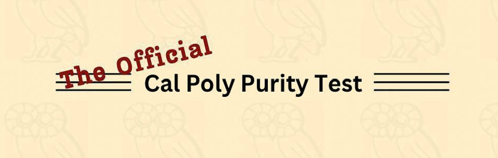

The Purity Test has historically served as a segue from WOW to true college life at Cal Poly.
It's a voluntary opportunity for WOW groups to bond, and for students to track the maturation
of their experiences throughout college.
Caution: This is not a bucket list. Completion of all items on this test will likely result in death.